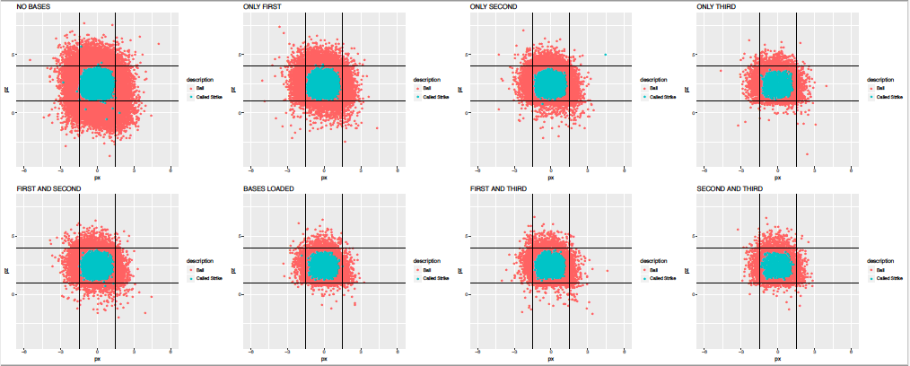

Welcome to the projects page! Here you'll not only find all of the projects that were listed on the home page, but also all of the projects that I have completed. The projects that are listed on this page can be a wide variety of topics and is not limited to only programming or computer science related topics. Please feel free to browse and explore the projects that I have completed using the navigation on the left. If the project is related to programming, the code will most likely be found on my Github profile. My handle is rgychiu. If you would like to contribute to any of these projects or would just like to make a suggestion to fix an error or improve my code, please feel free to reach out to me via email or Github. Thanks for stopping by!
Below is general description of each of the projects that are listed in the navigation panel. If you are interested in the project or are looking for a more detailed description, please navigate to the corresponding tab, where an in-depth explanation will be included.
This project was completed during my internship with a startup company in Chicago's startup incubator, 1871. My involvement with the company was facilitated through an organization at the Illinois Math and Science Academy and focused on entrepreneurship and innovation. Through the club, I was able to gain connections with companies at 1871 and ultimately apply and increase my knowledge of web development with LUV TALK.
The personal website was created as a fun projet to exercise and experiment with web development. In addition, it also serves as a location to share my creations and hobbies. As more events occur throughout my life and as I create more interesting projects, the site will continue to expand and grow, becoming larger, better, and equipped with a wider range of features and functionalities. Stay tuned!
Sabermetrics was a project that was started at the Illinois Mathematics and Science Academy and dealt with data analysis in baseball. Data from MLB was acquired and detailed several years of pitches, game states, calls, and player stats, which was ultimately transformed into quantitative analysis and a final project.
This fun project was created in an effort to publicize a dance organization at the Illinois Math and Science Academy, Spreading Dance Across Campus. In addition, the video also assisted in helping my friend and me to improve at breakdancing through watching recordings and identifying mistakes.
LUV TALK is a startup company based in Chicago, IL that provides consultation, services, and events to women that have experienced heart break or are seeking general advice. They have experts dealing with a wide variety of topics, from finance to lifestyle consultants. In addition, the company holds events open for the public and allows members to hold calls or chat sessions with experts.
My involvement with the company was facilitated through the Illinois Math and Science Academy. Their organization, TALENT, focuses on entrepreneurship and business ventures. Using this club, I was able to contact companies at 1871 that were seeking interns to help with their startups. As a result, I began to work alongside other developers for LUV TALK, focusing on developing and designing their website.
Currently, I work with Content Management Systems (CMS), including Wordpress, in tandem with other web development languages such as HTML, CSS, Javascript, PHP, and Ajax. When my project began, the website was being designed without Wordpress, but rather with just HTML, CSS, and Javascript. However, the content was migrated as a result of a shorter time frame for project completion and with the extra functionality that the CMS provided through plugins. A custom theme was created in Wordpress to manage and maintain the custom pages and styles that were already on the pages.
The original website can be found at this link, while the staging site can be found here. In comparison to the original site, the staging pages offer greater functionality and a different layout, reducing the redundancy of information on the front page and creating multiple pages. This was also done in order to restrict pages and information to registered members. Some of the added functionality includes a login page and feature, click to call, infinite scrolling, and dynamic displaying of information to specific users. In addition, some features and information on the pages were a result from altering plugins. For example, the login page modifies the design of a plugin in order to enhance the layout. Some other features, like the infinite scroll, relies on custom code rather than plugins to achieve a desired effect, or acquire functionality not offered by a plugin.
Still, some improvements can be made to the site before launch or even after that. For example, the current home page appears empty, only offering buttons to navigate away from the page and includes information on membership. Thus, more information can be added about the company on the same page, eliminating the need for blocks of information on the about page and creating space to add details about the team. This will add to the trustworthiness of the company and improve the layouts of both pages. If you would like to add suggestions to the project, please don't be afraid to contact me.
The personal project was project inspired by the ability to host sites off of Github or for free as well as by my involvement with LUV TALK. Through working with their staging site, my knowledge of HTML, CSS, and Javascript, among other languages, increased past the information that I acquired through the courses that I took my freshman year. As a result, I desired to create my own website to exercise these newfound skills and possibly increase them further while experimenting, adding creative and pleasant effects along with other features.
If you haven't noticed already, the website is hosted with Github. A framework, Bootstrap 3, was used in order to aid in positioning elements and create a mobile-friendly, responsive page and layout. However, since Bootstrap 3 does not have columns that are the same height, element heights are set equal to each other using Javascript in order to avoid breaking responsiveness. Other uses for Javascript on the website includes tabbed navigation, effects, and form validation for the contact section.
This website, on top of being an experimental site as well, will also be used as a portfolio to list all of my in-progress and completed projects. If you're interested, don't be afraid to check out my Github(rgychiu) or check back to the site to keep yourself updated on my work! If you would like to contribute to one of my projects or you have suggestions about the site, please reach out to me via email or clone the repository from Github and initiate pull requests with a description of your changes.
The Illinois Math and Science Academy, in between the fall and spring semesters, holds week-long classes called Intersession. During this period, one of the courses that I participated in dealt with Sabermetrics, the analysis of baseball data. Using R, I was taught baseball terminology (I don't usually keep up with baseball) and then contributed in class and group activities to practice using R and come up with analyses of our own. The final project involved performing our own analyses on data provided by the instructors, which they took off reputable sites containing many years of MLB statistics.
The graphs generated from the code represent the strike zone based on the game state. The strike zone refers to the 'area approximately from the armpits to the knees of the batter in batting position.' The game state represents the different combinations of players on the bases through a baseball match. The plots all have titles that describe the game state that the strike zone is based on. For example, the graph titled 'NO BASES' means that the data represents the strike zone when there are no players on the bases. 'FIRST AND SECOND' represents the strike zone when there are players on both first and second base. The plots also have different colored dots that represent one pitch - red describing pitches that were called balls and blue detailing pitches that were called strikes.
In order to get the graphs, a data set that contains the ball's position as well as the call was needed. The data set was trimmed down to only pitches that were called balls or strikes. Then, plots were created and the data was graphed based on the position of the ball and color coded with the call. Lines that surrounded the majority of the pitches when the game state had no players on the bases was then created and kept consistent throughout each of the graphs. This process was repeated for each game state, and the graphs indicate, based on qualitative analyis, that the strike zone decreases as the game state advances. This could occur for a variety of reasons, including the fact that the umpire could influence the call with a slight of hand in order to prevent the opponent from scoring more runs. The balls would cause more walks in order to force a 'worse' batter to bat.
Still, there are various additions that could be added to this project. For example, more quantitative analyses can be done on the graphs and data set in order to determine if the change is statistically significant. If you would like to contribute to the project or have a suggestion, please don't be afraid to contact me via email or clone the repository and initiate pull requests.
At the Illinois Math and Science Academy, there exists an organization called Spreading Dance Across Campus (SDAC). This club aims to spread dance culture and styles to the students at the academy and allow others to join, learning these styles from their peers and performing in cultural shows.
This video was created in order to help advertise for the club as well as assist my friend and me improve. The filming was done on campus, while the filming and editing were done by other members of the club. Other videos with original choreography as well as the organization's performances can be found at this link.
There really isn't much else to say about this project...If you have any suggestions on what I could improve on, don't be afraid to reach out to me!